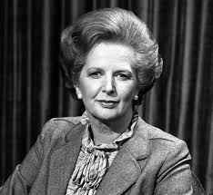
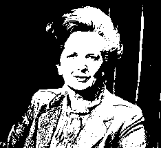

Otsu thresholding is a technique for dividing an image into foreground and background. Useful for converting an image to two colours, or as a first step in object recognition.
 The results of thresholding the image of Margaret Thatcher are quite good. The resulting image is visauly acceptable.
It works by making a histogram of the greyscale values in the image, then looking for the point which maximises the difference betwwen the two sets, whilst minimisng variation within the sets. In other words, it looks for a dip somewhere in the middle of th histogram.

As we can see here, the image is continuous grey and the dip is very subtle, but the method has found it. It has also avoided the spurious dip caused by the presence of a lot of black or nearly black pixels.